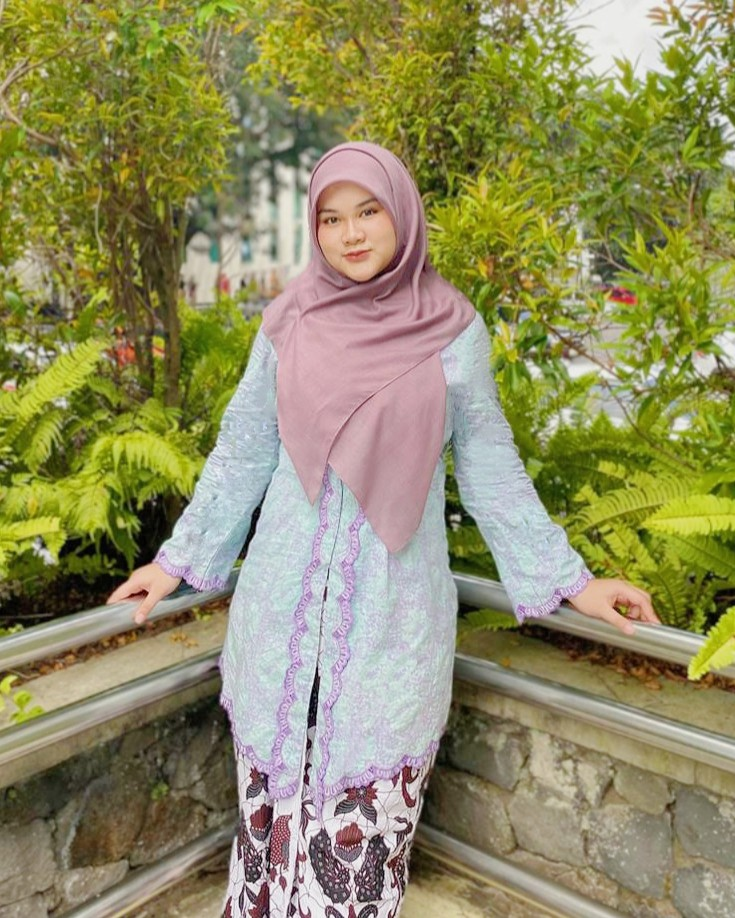

Mahasiswi Psikologi Universitas Islam Indonesia yang membantu organisasi merekrut, menilai, dan mengembangkan orang yang tepat — lewat proses seleksi yang terstruktur, data yang rapi, dan asesmen yang bisa dipertanggungjawabkan.
Mahasiswi Psikologi di Universitas Islam Indonesia yang memiliki ketertarikan pada Human Capital - Organizational Development - Assesment - Copywriting.
Selama kuliah, saya aktif mendukung proses rekrutmen, seleksi, evaluasi kinerja, dan pengembangan SDM — mulai dari menyusun instrumen evaluasi, melakukan screening kandidat, hingga mengolah data kinerja sebagai dasar rekomendasi pengembangan.
Saya juga terbiasa mengadministrasikan dan menginterpretasikan alat asesmen psikologis (WAIS, IST, PAULI, SSCT, DASS), serta menulis laporan asesmen dan artikel edukatif psikologi secara sistematis. Saat ini saya ingin mengenal dunia kerja lebih dalam melalui kacamata Psikologi Industri & Organisasi.
Mengadministrasikan, melakukan skoring, dan menginterpretasikan alat ukur psikologis untuk kebutuhan profil individu.
Proyek kuliah, riset, dan inisiatif menulis yang mencerminkan minat saya pada HR, asesmen, dan komunikasi.
Merancang job analysis, job description, dan job specification untuk 3 posisi kunci (Sales Force, Digital Marketing, E-commerce), dilengkapi strategi sourcing multi-channel.
In-depth interview dengan Manager PPIC PT Super Steel Karawang & Store Manager Starbucks Indonesia untuk menganalisis struktur Core & Fringe Compensation.
Merancang produk minuman herbal & aromaterapi untuk menurunkan stres kerja, lengkap dengan analisis segmentasi pasar psikografis dan SWOT bisnis.
Menyusun naskah akademik dan mempresentasikan riset kuasi-eksperimental mengenai pengaruh suasana hati positif terhadap efisiensi fungsi eksekutif mental.
Menulis dan mempublikasikan artikel SEO seputar kecemasan, depresi, dan kesehatan mental di Blogspot dan WordPress untuk audiens umum.
Merancang strategi promosi event lomba menulis cerita pendek untuk dua penerbit melalui Instagram dan copywriting persuasif.
Saya terbuka untuk peluang magang, riset, maupun kolaborasi proyek di bidang human capital dan psikologi industri & organisasi.